01 · Быстрый старт
Сначала — самое важное
Выберите пирата
Нажмите на свою фишку на корабле или острове. Если на клетке несколько ваших пиратов, выберите нужного в появившейся плашке.
Выберите клетку
Нажмите на подсвеченную клетку. Закрытая клетка откроется, когда на неё впервые ступит пират. Её эффект часто меняет маршрут.
Решите, брать ли груз
Если под пиратом есть монета или сокровище, переключите кнопку груза. Можно сделать ход с находкой или оставить её на месте.
Верните добычу
Доведите пирата с находкой до своего корабля. Только доставленный груз увеличивает счёт команды.
Подсказка интерфейса: игра сама подсвечивает допустимые клетки. Если ход невозможен, такой клетки не будет среди вариантов; не нужно запоминать все исключения наизусть.
02 · Управление
Как проходит ход
В свой ход команда выбирает одно основное действие: переместить пирата или передвинуть корабль. Некоторые клетки запускают последовательность — например, просят выбрать направление стрелки, выход из пещеры или клетки маяка. Завершите такой выбор, и ход продолжится автоматически.
Пират на острове
- Обычно он переходит на одну соседнюю клетку — по вертикали, горизонтали или диагонали.
- Нажмите на пирата, затем на подсвеченное место назначения.
- По кнопке груза можно выбрать «Без монеты», «С монетой» или «С сокровищем».
- Если пират уже несёт груз, он может продолжить путь с ним или оставить находку на своей клетке.
Пират и корабль
- С корабля пират высаживается на первую клетку острова перед носом судна.
- Пловец движется по морским клеткам к берегу или к своему кораблю.
- Кнопка «Двигать корабль» сдвигает судно на одну позицию вдоль его края.
- Корабль можно двигать, пока на нём остаётся хотя бы один свой пират. Пираты на борту едут вместе с ним.
На стрелке с несколькими выходами, коне, пещере, маяке и землетрясении игра ждёт уточнения. В строке хода написано, что именно нужно выбрать. Ром может быть отдельным бесплатным действием, если команда может дать его персонажу рядом.
Что означают подсветки
Туда можно переместиться выбранным способом.
На клетке можно поднять монету или сокровище, если включить соответствующий режим груза.
Действие может погубить пирата. Подсветка и текст статуса помогают понять риск до выбора.
03 · Чтение поля
Значки и обозначения
Цвет обозначает команду. Попадание на свой корабль доставляет груз; чужой корабль опасен.
Обычные пираты помечены номерами 1–3. Значок ×2 или ×3 означает несколько фишек на клетке.
Её содержимое пока неизвестно. Первый пират, ступивший на неё, открывает и разыгрывает её.
Одна единица счёта. Подберите её и довезите до корабля.
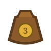
Стоит три монеты. Ищите его в галеоне.
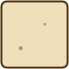
Клетка уже исследована. На ней могут лежать оставленные монеты или сокровище.
×
13
Остров и море. Игровое поле — сетка 13 × 13. Остров занимает 11 × 11 клеток, кроме четырёх углов; по краям находится море и стоят корабли. Карта собирается заново для каждой новой партии.
04 · Добыча и столкновения
Монеты, доставка и бой
Как работает груз
- Монета и сокровище подбираются с клетки, когда вы уходите с неё.
- На корабле своего цвета груз прибавляется к счёту. Галеон приносит 3 монеты.
- Погибший пират оставляет груз на острове; если груз теряется в море, он выбывает из игры.
- Нельзя взять груз и зайти с ним в джунгли, крепость или на клетку аборигенки.
Столкновение с врагом
- Обычный пират-боец, вставший на врага, отправляет того на его корабль. Сам пират обычно остаётся на клетке.
- Такой бой не происходит в джунглях; миссионер защищает соседнюю группу.
- На занятую врагом крепость зайти нельзя. Стоящего внутри крепости врага не атаковать.
- Пятница не атакует: при нападении он переходит к команде нападающего.
Обычный ход с острова не позволяет просто шагнуть в воду. Но стрелка, пушка, ледяной занос и другие принудительные перемещения могут вынести пирата в море. Безопасно вернуться можно на свой корабль; вражеский корабль или открытая вода могут закончиться гибелью и потерей груза.
05 · Атлас острова
Все клетки острова
Ниже перечислены клетки и эффекты, которые есть в текущей версии. Значок ведёт к картинке из игры; направление стрелок и пушек на поле может быть повёрнуто.
Путь и перемещение
Ничего особенного не происходит. Можно оставить здесь груз.
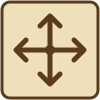
Пират движется по стрелке. Если направлений несколько, выберите одно — это продолжение того же хода.
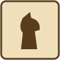
Скачет как шахматный конь: на две клетки в одну сторону и на одну вбок. Выберите подсвеченную точку приземления.
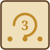
Останавливает пирата на число ходов, указанное на клетке; каждый свой ход он продвигается по вертушке. Груз остаётся при нём. Пятница проходит за один ход.
Пират скользит дальше в том же направлении, пока цепочка перемещения не остановится.
Выстреливает пирата по направлению ствола через остров прямо в море.
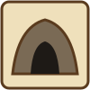
Выберите другой открытый вход без врагов. Если выхода пока нет, пират ждёт внутри до открытия новой пещеры.
Одноразовый перенос: выберите точку на острове или свой корабль. Груз доставится вместе с пиратом.
Сразу уносит пирата с грузом на его корабль и доставляет добычу.
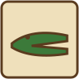
Срывает перемещение: пират и груз возвращаются к месту, откуда начался этот ход.
Опасности, защита и помощь
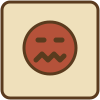
Съедает пирата и оставляет его груз на клетке. Пятница не боится людоеда.
Запирает пирата на месте. Освободить его может союзник, вставший рядом, или ром; Пятница в капкан не попадает.
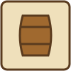
Пират пропускает ровно один свой ход. Другими пиратами команды можно ходить как обычно.
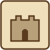
Защищает стоящего здесь пирата от нападения. Нельзя войти с грузом или вытеснить врага из занятой крепости.
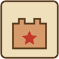
На клетку нельзя зайти с грузом; занятая врагом клетка защищена. Если у команды меньше трёх бойцов, здесь можно воскресить погибшего бойца.
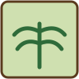
Внутри не дерутся и могут стоять разные команды. Войти с монетой или сокровищем нельзя.
Один раз позволяет открыть до четырёх закрытых клеток. Их находки и некоторые эффекты срабатывают при первом посещении.
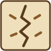
Выберите две свободные клетки без пиратов и груза — их содержимое поменяется местами.
Сокровища, ром и случайные события
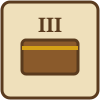
В сундуке столько монет, сколько показывает римская цифра: от одной до пяти.
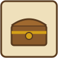
Открывает одно сокровище стоимостью три монеты.
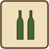
Даёт команде запас рома. Ромом можно освободить своего пирата из капкана или изменить особого персонажа; действие с персонажем может израсходовать бутылку.
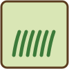
На короткое время меняет управление: каждый игрок в свой ход командует пиратами следующей команды по кругу.
Пират восклицает «Каррамба!». На правила и положение фигур это не влияет.
Цепочки эффектов. Стрелка, лёд, пушка, крокодил и другие эффекты могут сработать подряд в рамках одного хода. Если принудительное движение приводит туда, куда попасть невозможно, пират погибает; груз остаётся в месте начала хода. Для открытого крокодила есть отдельная опция домашнего правила.
06 · Особые фишки
Персонажи
Персонажей можно встретить на острове. При первом открытии их клетка присоединяет нового персонажа к команде пирата, который её открыл.
Боец
Бен Ганн
Сражается как обычный пират. Если погибнет, его можно воскресить на клетке аборигенки, пока в команде меньше трёх бойцов.
Непредсказуемый союзник
Пятница
Не атакует и сам не попадает в капкан; людоед ему не страшен, а вертушку он проходит за один ход. Если на него напасть, он переходит к нападавшему. Встреча с миссионером выводит обоих из партии. Выпив ром, Пятница уходит, а оставшаяся порция рома достаётся команде.
Защитник
Миссионер
Не носит добычу и не сражается. Пираты на одной клетке с миссионером не могут нападать в этот ход; враг также не вытеснит его с клетки. Обычный пират может встать на клетку, занятую только миссионером. Выпив ром, миссионер становится бойцом — экс-миссионером. Встреча с Пятницей выводит обоих из партии.
07 · Перед началом партии
Режимы и способы играть
1 на 1
Белые против Чёрных. Каждый игрок управляет одним кораблём и тремя пиратами.
1 на 1 · две команды
Игрок 1 управляет Белыми и Чёрными; игрок 2 — Жёлтыми и Красными. У каждой стороны общий счёт.
В текущем меню доступны эти два варианта. На одном устройстве игроки передают управление друг другу. Для игры онлайн создайте комнату и поделитесь кодом. Также можно передавать ход файлом позиции: выберите игрока, сохраните файл после своего хода и отправьте его сопернику.
Онлайн
Один игрок создаёт комнату и передаёт код. Второй вводит его в разделе «Играть онлайн». Если соединение прервалось, игра пытается восстановиться после обновления страницы.
Игра по файлам
В выпадающем списке укажите, за какого игрока играете. После хода нажмите «Сохранить», передайте файл сопернику, а полученную позицию откройте кнопкой «Загрузить позицию».
Перед стартом можно включить «Открытый крокодил убивает»: принудительная цепочка на уже открытого крокодила погубит пирата. Или «Правило Архипелага»: враги не могут встать на клетку миссионера. Это параметры партии — онлайн-соперник играет с теми же настройками.
08 · Подсчёт результата
Когда заканчивается игра
Большинство
Сторона доставила 21 или больше из 40 возможных монет.
Сокровища закончились
Все монеты и сокровища уже доставлены или потеряны. Побеждает сторона с большим счётом.
Пиратов не осталось
На поле нет живых пиратов. Сравните доставленные монеты.
Нет ходов
Полный круг команд прошёл без доступных действий. Побеждает лидер по счёту.
Если партия заканчивается без достижения большинства, выигрывает сторона с большим количеством доставленных монет. При равном счёте лидеров — ничья.
09 · Короткие ответы
Частые вопросы
Почему я не могу подобрать монету?
Проверьте кнопку груза и клетку назначения. С грузом нельзя войти в джунгли, крепость или на аборигенку; на некоторых клетках сперва нужно закончить принудительное перемещение.
Почему пират вернулся назад?
Так действует крокодил. Он возвращает пирата к исходной клетке текущего хода, а груз оставляет там.
Почему погиб пират, если клетка была подсвечена?
Подсветка показывает, что ход доступен по правилам. Но сама цепочка эффектов может привести к опасности: например, пушка или лёд вынесут пирата в море. Следите за предупреждениями и направлением эффекта.
Можно ли воскресить любого персонажа?
На аборигенке воскресают бойцы: обычные пираты, Бен Ганн и экс-миссионер. Миссионер и Пятница не воскресают; также нужно, чтобы у команды было меньше трёх бойцов в строю.
Что делать, если клетка с несколькими своими пиратами?
Нажмите на группу. Появится плашка с номерами фишек; выберите конкретного пирата и затем назначение.
Почему соперник ходит моими пиратами?
Если на острове загорелась трава, временное правило передаёт управление следующей команде в круге. Это действует несколько ходов, затем обычный порядок возвращается.
Это те же правила, что в моей настольной коробке?
Не обязательно. Это справочник по конкретной веб-реализации; состав и детали могут отличаться от разных изданий настольной игры.
Карта ждёт
Теперь можно выходить в море
Помните главное: находка ещё не очко. Доставьте её на корабль.